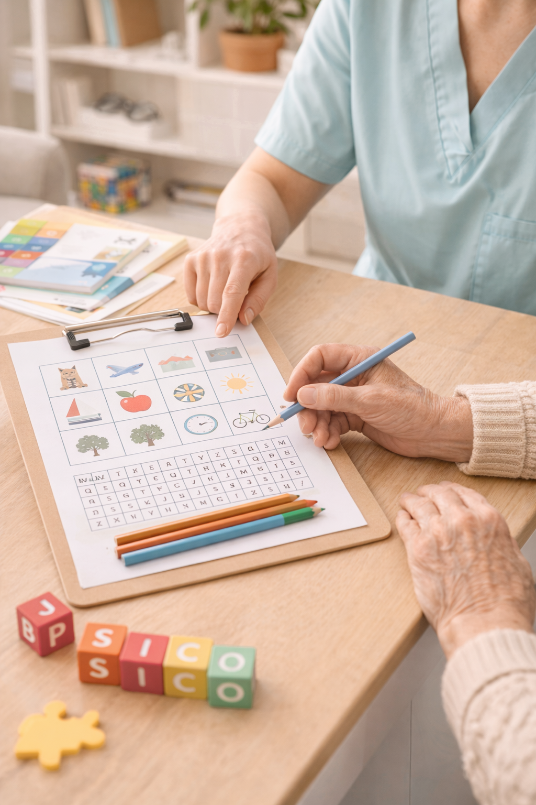
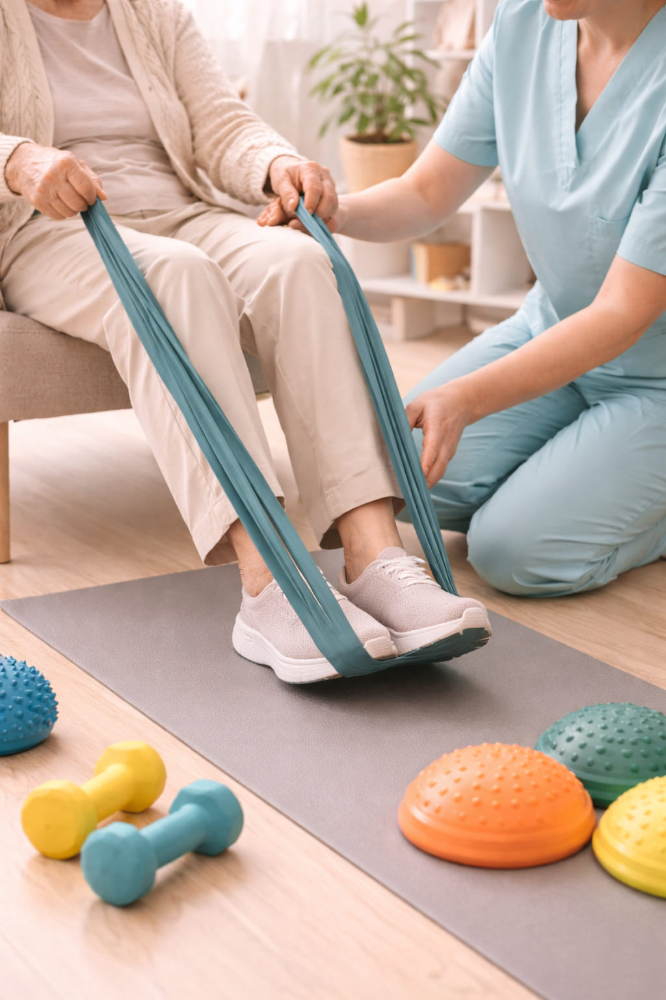
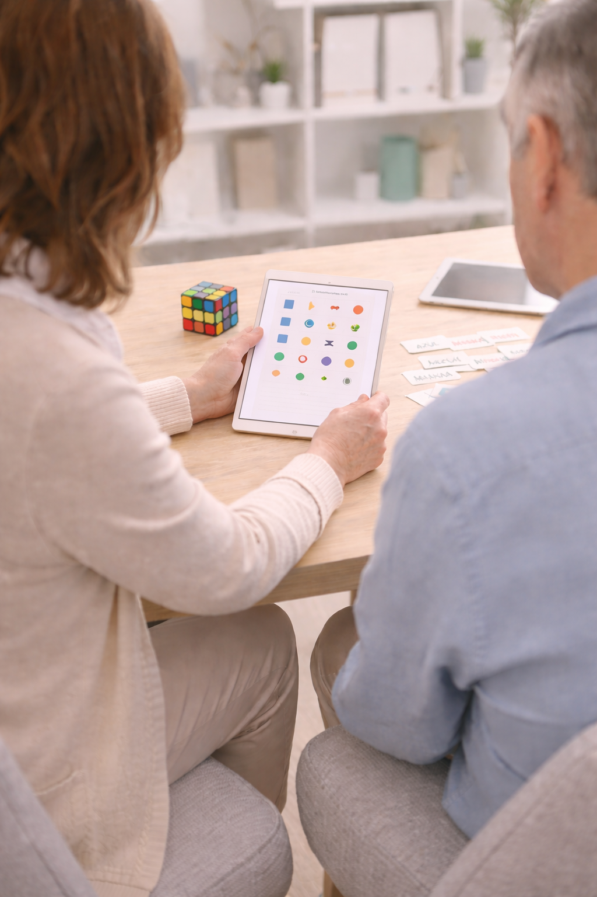
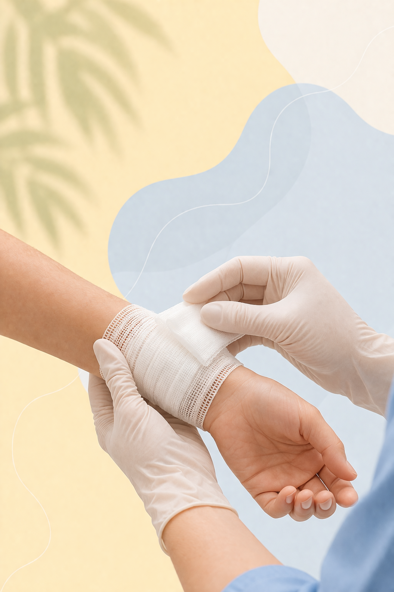
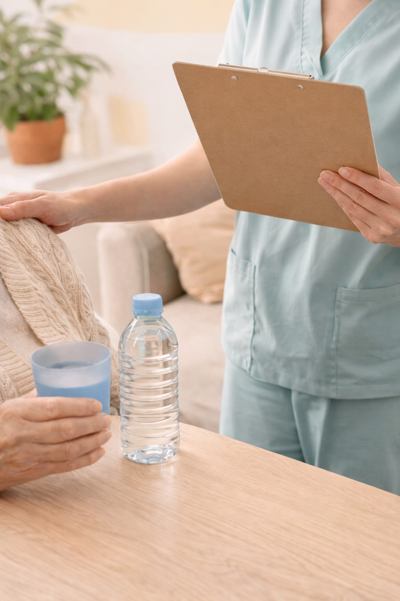
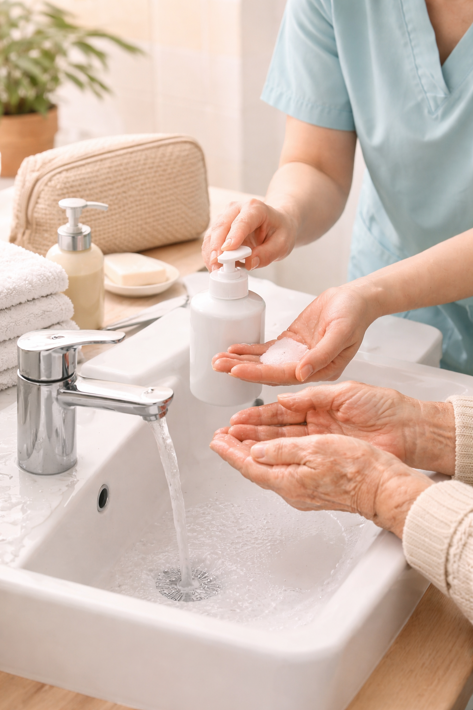
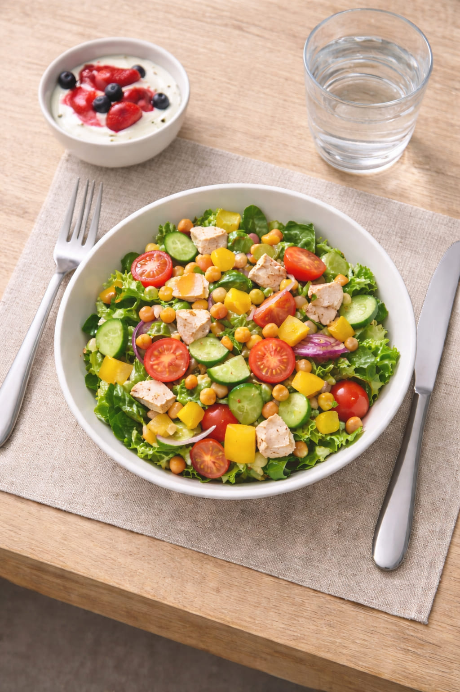
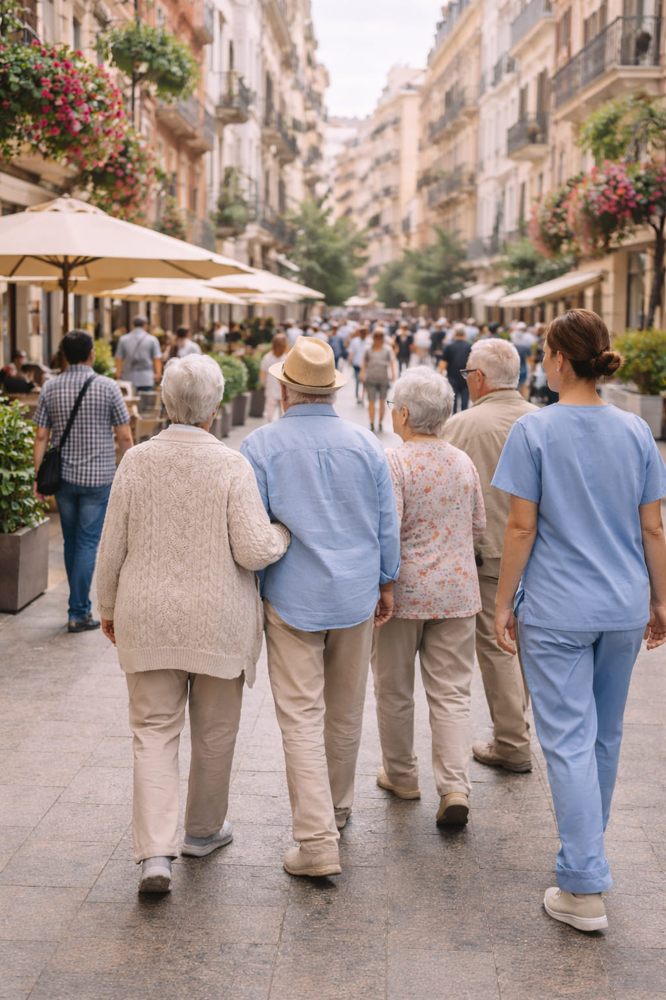
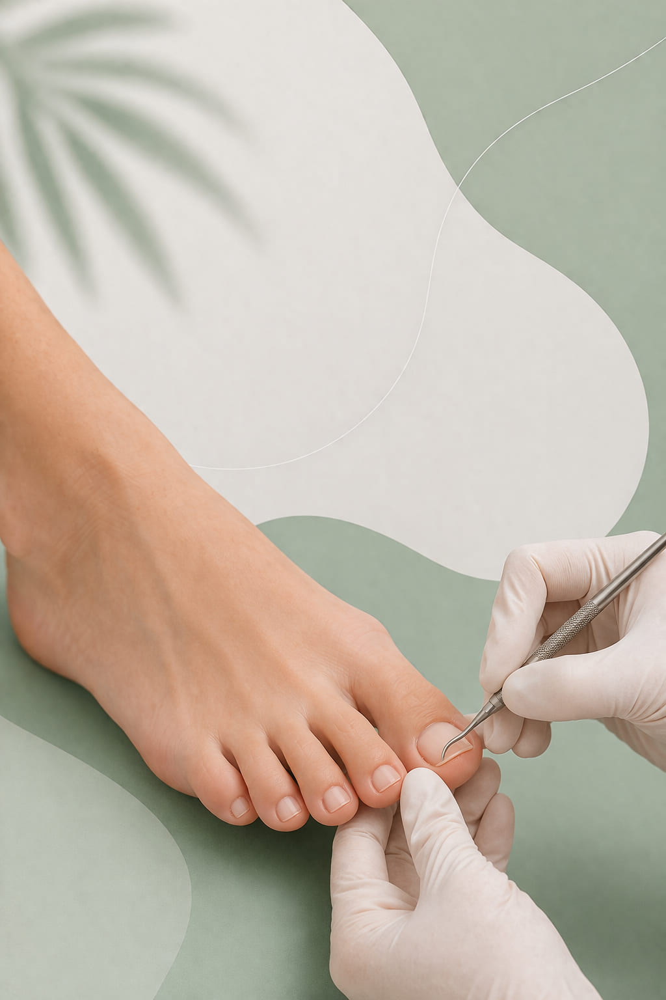

Psicoestimulación cognitiva
Realizamos actividades orientadas al mantenimiento de la memoria, la atención, el lenguaje, la orientación y otras capacidades cognitivas, adaptándolas a las necesidades y al ritmo de cada persona usuaria.
UNIDAD DE DÍA
En nuestra Unidad de Día ofrecemos una atención integral, cercana y adaptada a las necesidades de cada persona, favoreciendo su bienestar, su autonomía y su calidad de vida a lo largo de toda la jornada.

Realizamos actividades orientadas al mantenimiento de la memoria, la atención, el lenguaje, la orientación y otras capacidades cognitivas, adaptándolas a las necesidades y al ritmo de cada persona usuaria.

Desarrollamos intervenciones dirigidas a preservar la movilidad, el equilibrio, la funcionalidad y la autonomía personal, mediante ejercicios y actividades adaptadas a las capacidades de cada usuario.

Llevamos a cabo actividades manuales y ocupacionales que favorecen la participación activa, la motricidad, la creatividad y el mantenimiento de habilidades funcionales en el día a día.

Trabajamos de forma personalizada diferentes funciones cognitivas y conductuales, con el objetivo de favorecer el mantenimiento de capacidades preservadas y apoyar la adaptación a la evolución de la enfermedad.
Ofrecemos apoyo psicológico orientado al bienestar emocional de la persona usuaria y al acompañamiento ante las dificultades que pueden surgir a lo largo del proceso de atención.

Contamos con atención de enfermería para realizar seguimiento del estado de salud, atender necesidades básicas y contribuir al bienestar general de las personas usuarias durante su estancia en el centro.
Ofrecemos orientación y acompañamiento social a las familias, facilitando información, apoyo en trámites y seguimiento de las necesidades sociales que puedan surgir.

Acompañamos a las personas usuarias durante toda la jornada mediante una atención continuada y cercana, supervisando sus rutinas diarias, el control de hidratación y su bienestar general.

Prestamos apoyo en el aseo y en la higiene personal, siempre desde el respeto, la dignidad y la atención individualizada, adaptándonos a las necesidades de cada persona.

La Unidad de Día incluye servicio de almuerzo, garantizando una atención integral durante la jornada y contribuyendo al cuidado nutricional y al bienestar diario de las personas usuarias.

A lo largo del año organizamos salidas, celebraciones y actividades especiales que fomentan la convivencia, la participación, la estimulación emocional y el disfrute de experiencias compartidas.
Contamos con servicio externo de peluquería para facilitar el cuidado de la imagen personal y el bienestar de las personas usuarias sin necesidad de desplazamientos adicionales.

Disponemos de servicio externo de podología como apoyo complementario al cuidado personal, contribuyendo al confort, a la salud del pie y al bienestar general de las personas usuarias.